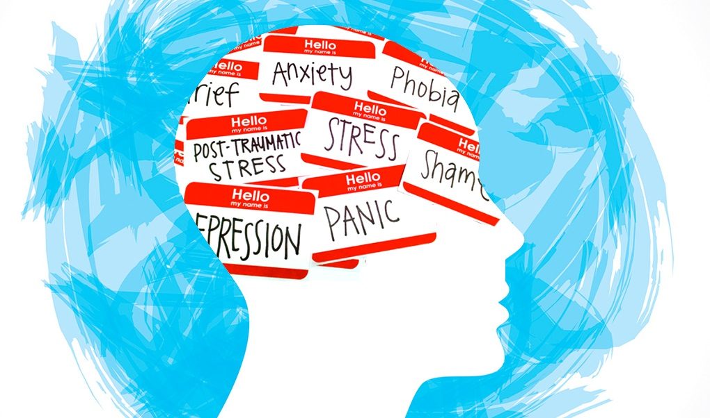

Breaking the Stigma Around Mental Illness
Mental illness affects millions of people worldwide, yet it remains one of the most stigmatized issues in society. This stigma prevents many individuals from seeking the help they need and fosters a culture of shame and silence. Breaking this stigma is essential to creating a more compassionate, understanding world where mental health is treated with the same importance as physical health.
What is Mental Health Stigma?
Stigma refers to negative attitudes, beliefs, and stereotypes about people with mental health issues. These misconceptions often label individuals as "weak" or "dangerous," leading to discrimination and social exclusion. Stigma can manifest in several ways, such as:
- Self-stigma: When individuals internalize negative beliefs about their own mental health, leading to feelings of shame or unworthiness.
- Public stigma: The widespread societal attitudes that reinforce harmful stereotypes about mental illness.
- Institutional stigma: Policies or practices within systems (like healthcare or workplaces) that contribute to unequal treatment of individuals with mental health conditions.

Why is Stigma Harmful?
Stigma can have devastating effects on individuals dealing with mental health challenges:
- Delays in Seeking Help: Many people delay or avoid seeking treatment due to fear of being judged or discriminated against. Early intervention is often key to managing mental health, so this delay can worsen symptoms.
- Social Isolation: The fear of being ostracized can lead people to hide their struggles, causing them to become isolated and feel unsupported.
- Increased Emotional Distress: Stigma can amplify feelings of guilt, shame, and worthlessness, making mental health issues even harder to manage.
- Barriers to Opportunities: Stigmatized individuals may face difficulties in the workplace, in education, or in their personal lives, limiting their potential and quality of life.
How Can We Break the Stigma?
Breaking the stigma around mental illness requires collective action and open conversation. Here are several ways we can challenge and change the way society views mental health:
-
Educate Yourself and Others:
One of the most effective ways to combat stigma is through education. Many misconceptions about mental illness stem from a lack of understanding. Learn about different mental health conditions, their causes, and treatments. Share this knowledge with others to help debunk myths and spread accurate information.
-
Encourage Open Dialogue:
Talking openly about mental health can help normalize the conversation. If you feel comfortable, share your experiences or ask others about their mental health journeys. The more we talk about mental illness as a part of everyday life, the less taboo it becomes.
-
Use Supportive Language:
Words matter. Avoid using stigmatizing language like "crazy" or "insane," which can perpetuate harmful stereotypes. Instead, use respectful and compassionate language that acknowledges the reality of mental health struggles.
-
Challenge Stereotypes:
If you hear someone making a derogatory comment about mental illness, speak up. Gently challenge their assumptions and provide a different perspective. It’s essential to address stigma when you encounter it in everyday conversations.
-
Promote Mental Health in the Workplace:
Workplaces are an important arena for breaking the stigma. Encourage your organization to prioritize mental health by offering mental health resources, promoting work-life balance, and fostering an environment where employees feel safe discussing their mental health.
-
Support Mental Health Advocacy:
Support organizations that advocate for mental health awareness and stigma reduction. Whether through donations, volunteering, or simply spreading their message, you can contribute to a broader cultural shift toward mental health acceptance.
-
Highlight Success Stories:
It’s important to show that people with mental health conditions can and do live fulfilling, successful lives. Highlighting stories of individuals who have overcome mental health challenges helps counter the narrative that mental illness defines a person.
The Role of Media and Culture
The media plays a significant role in shaping public perceptions of mental illness. Often, media portrayals are inaccurate or sensationalized, which reinforces stigma. It’s crucial for creators, writers, and producers to represent mental health issues responsibly, showing both the challenges and the resilience of those affected.
Together, We Can End the Stigma
Breaking the stigma around mental illness isn’t a quick fix—it requires ongoing efforts from individuals, communities, and society at large. By educating ourselves, speaking up, and promoting mental health awareness, we can create a world where people feel empowered to seek help without fear of judgment. Mental health is a universal issue, and everyone deserves support, understanding, and respect.
Comments